Talking with Leviathan
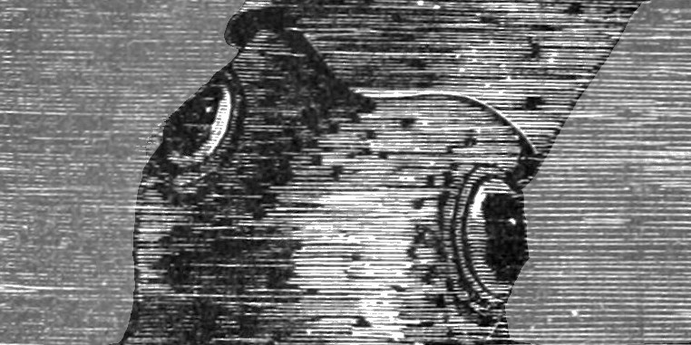
SAP, oData and HTML5
SAP ERP — 1
- Enterprise Resource Planning
- Business Document Oriented
- GUI access, easy customization, great flexibility
SAP ERP — 2
- Many obscure icons, shortcuts
- Its own programming environment & 4GL language (ABAP)
- Internals may be in German:
WERKS, MEINS, MATKL, LGORT
Parallel Evolution

SAP NetWeaver
Interfaces:
- iDoc (EDI-like)
- "RFC" (RPC-like, see PyRFC)
- oData (RESTful)
- ABAP code stored in SAP, using SAP's native revision control
SAP NetWeaver — oData
- RESTful
- Serialization to JSON or XML
- Actions as well as CRUD
- Nested serialization
- Entities don't have to correspond 1:1 with SAP objects
- Easy to interface from HTML5
HTML5 Apps
- Easy to implement
- Very wide variety of devices
- Responsive design for multiple devices
- Plenty of library support
User Experience
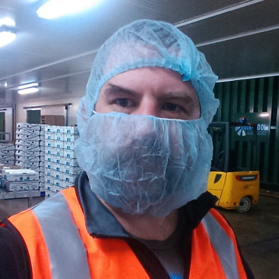
- Hostile environments
- Busy environements
- Simple UI
- Specialization
- Minimize training requirements
Architecture
Architecture — 1
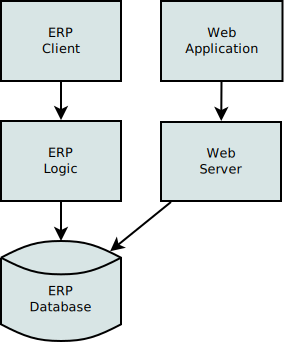
- Direct access to database
- Unavailable when ERP offline
- Avoids going through business logic
- Can lead to bad ERP state
- Can lead to DoS
Architecture — 2
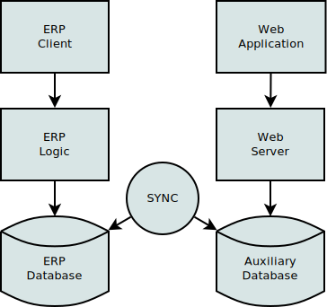
- Insulates ERP against Web
- Can denormalize
- Can firewall
- Sync process is hairy
Case Study: SolutionsOnline
- Ran from 2008 to 2015
- SAGE Line500 (Informix / SQL Server)
- ∼2000 weekly users
- Review Invoices, Statements
- Report on Gas Usage
- Make payments
- Merged into MyAccount
Architecture — 3
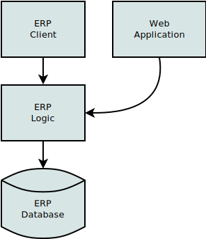
- SAP Netweaver
- Interface HTML5 app direct to oData
- Fewest moving parts
- No extra infrastructure
- Unavailable when ERP offline
- Revision control & Authentication are inflexible
Case Study: Mushrooms Scanning — 1
- 6 Farms in WA, SA, Vic, QLD
- ∼30 Scanners + ∼20 Tablets
- ∼1000 pallets / day
- Short warehouse shelf life
- Scanning guns & Industrial tablet PCs
- localStorage and HTML5 Manifests for partial offline use
Case Study: Mushrooms Scanning — 2
- Availability limited when ERP is offline
- Revision control is painful
- Authentication is inflexible
- ... slower development
Architecture — 4
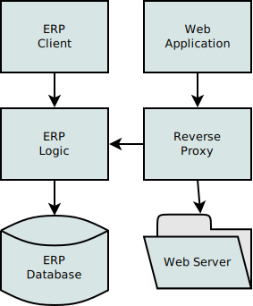
- Use a reverse proxy & web server
- Easier to control headers, caching, URLs etc
- At least if ERP is unavailable you get a friendly error message!
Architecture — 5
- Auxiliary database
- Sync to oData or RFC
- Sync process is hairy
- More moving parts
- Can denormalize
- System remains online when ERP unavailable
Case Study: The Reject Shop
- ∼340 stores, ∼1200 devices, mostly HTML5
- BizTalk, MS SQL Server, WebSphere
- Business logic partly implemented outside SAP
- Separate applications for specific roles
Architecture — 6
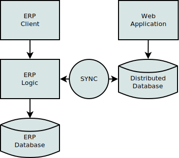
- Future work: Distributed Databases
- eg: CouchBase Mobile
- Devices work offline
- Fewer moving parts
Agility — 1
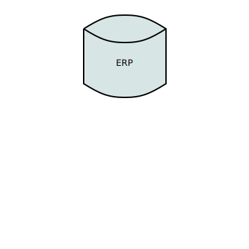
- ERP system changes very slowly
Agility — 2
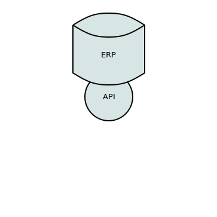
- ERP system changes very slowly
- API code is embedded and can't be changed easily either
Agility — 3
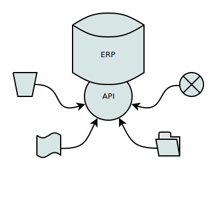
- ERP system changes very slowly
- API code is embedded and can't be changed easily either
- Once API is defined peripheral systems can be added easily
Agility — 4
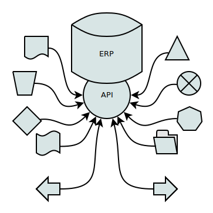
- ERP system changes very slowly
- API code is embedded and can't be changed easily either
- Once API is defined peripheral systems can be added easily
- ... and more, and more, and more ...
Thanks
- Mark van de Ven
- Louwtjie Nel
- Vaibhav Kumar
Questions / Comments
Nick Moore
Mnemote Pty Ltd
Credits / References
Image Credits
References
{kind=link}
{kind=link}
{kind=link}